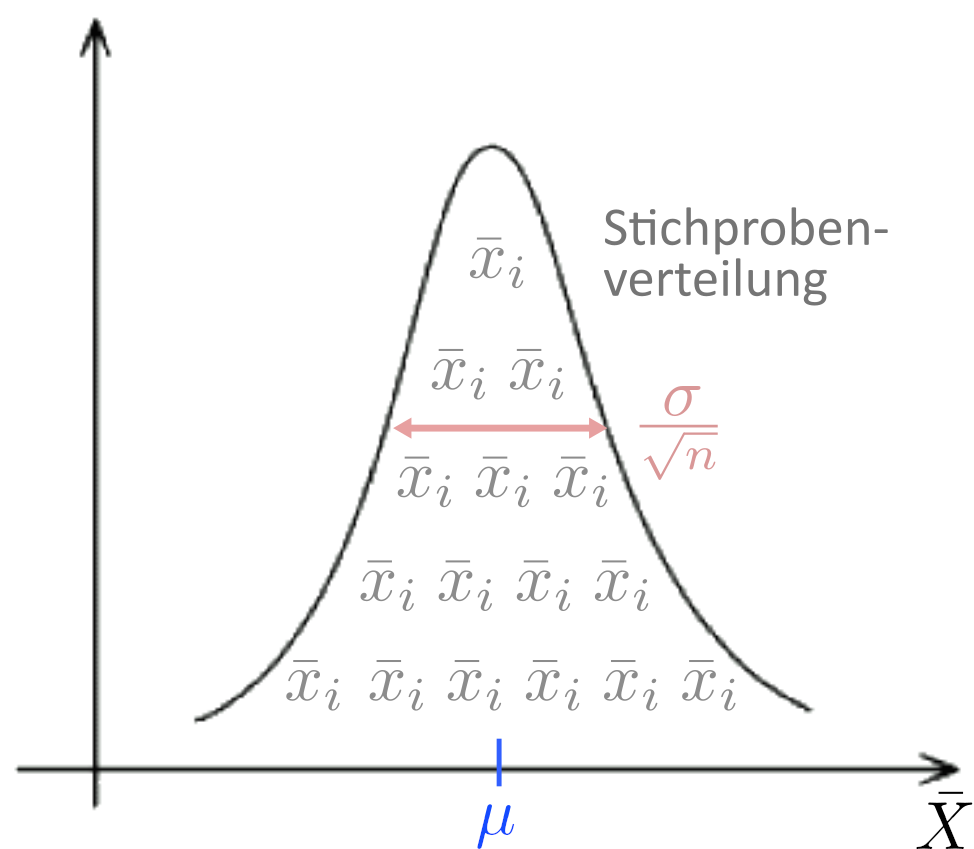

M24 Statistik 1: Wintersemester 23/24
Vorlesung 09: Wahrscheinlichkeitsverteilungen
Health and Medical University Potsdam
Wahrscheinlichkeitsverteilung
Wir kennen nun die Form und die Formparameter (Mittelwert, Standardfehler) der theoretischen Stichprobenverteilung. Mathematisch handelt es sich bei der Funktion, die diese Verteilung beschreibt, um eine Wahrscheinlichkeitsverteilung.

 |
Eine Wahrscheinlichkeitsverteilung ist eine mathematische Funktion, die jeder Merkmalsausprägung auf der \(x\)-Achse einen Häufigkeitswert \(f(x)\) auf der y-Achse zuweist. |
Um dieses Konzept zu verstehen, verlassen wir kurz die Idee der Stichprobenverteilung und gehen zurück zu einem Konzept, das wir bereits kennen: relative Häufigkeiten, dargestellt als Histogramme.
Zur Erinnerung: Histogramme stellen die Häufigkeit der ursprünglichen Merkmalsvariable in einer Stichprobe oder Population dar. Wird die relative Häufigkeit aufgetragen, handelt es sich dabei um eine empirische Wahrscheinlichkeitsverteilung.

Wahrscheinlichkeitsverteilung
- Bei der relativen Häufigkeit in Histogrammdarstellung wird für jedes Intervall der untersuchten Variable abgetragen, welcher Anteil der Versuchspersonen das Merkmal im jeweiligen Wertebereich trägt.
- Die Breite des Intervalls – auch Kategorienbreite d genannt – ist dabei im Fall von empirischen Daten immer ein Kompromiss zweier Faktoren:
- Auflösung: je schmaler das Intervall, desto besser die Auflösung.
- Fallzahl: je breiter das Intervall, desto höher die Zahl der Fälle in diesem Intervall, desto besser die Schätzung für die Häufigkeit.

Wahrscheinlichkeitsverteilung
Wie ist es nun, wenn wir die mathematische Funktion kennen, die eine Wahrscheinlichkeitsverteilung beschreibt?
Beispiel Normalverteilung:
\[ f(x) = \frac{1}{\sigma\sqrt{2\pi}}e^{-\frac{1}{2}\left(\frac{x-\mu}{\sigma}\right)^2} = \frac{1}{\sigma\sqrt{2\pi}}\text{exp}\left(-\frac{(x-\mu)^2}{2\sigma^2}\right) \]
- In diesem Fall ist uns für jedes Intervall und für jede noch so kleine Kategorienbreite der
wahre y-Wert bekannt ist (wir kennen ja die Funktion). - Wir können also die Kategorienbreite beliebig klein wählen, und wüssten immer noch den präzisen Wahrscheinlichkeitswert.

Wahrscheinlichkeitsverteilung
- Je kleiner die Kategorienbreite, desto geringer werden die relativen Häufigkeiten
- Beispiel: die relative Häufigkeit, dass ein Merkmal im Intervall \([6; 8]\) liegt ist größer, als die relative Häufigkeit, dass das Merkmal im Intervall \([6; 7]\) liegt.
- Für jede gewählte Kategorienbreite ist die Summe aller Balken allerdings weiterhin 1, denn die Wahrscheinlichkeit, dass das Merkmal irgendeinen der Werte annimmt, muss 1 sein.
- Für \(d\rightarrow 0\) gehen die y-Werte gegen Null
- Beispiel: die Wahrscheinlichkeit, dass Nasen eine bis auf die unendlichste Nachkommastelle präzise Länge haben (z.B. \(4{,}318264812357218735....cm\)) ist Null.
- Diese Überlegung führt uns zur Dichtefunktion ⎘
Wahrscheinlichkeitsdichte
Geht die Kategorienbreite gegen 0, wird die Wahrscheinlichkeit(sverteilung) zur Wahrscheinlichkeitsdichte(verteilung).
Wie kann man sich “Wahrscheinlichkeitsdichte” vorstellen?
- Wir kennen das Konzept der “Dichte” bei Stoffen: z.B. ist die Dichte von Eis ist ca. \(0{,}918\stackrel{g}{}\!\!\unicode{x2215}_{\!\unicode{x202f}cm^3}\), d.h. dass sich in einem \(1cm^3\) Würfel ein knappes Gramm Eis befindet.
- Eine Dichte ist also immer eine bestimmte Masse pro Maßeinheit.
Wir können daher Wahrscheinlichkeitsdichte wie folgt definieren:
|
\(\text{Wahrscheinlichkeitsdichte} = \text{Wahrscheinlichkeits(masse) }pro\text{ Maßeinheit}\) |
- Die Maßeinheit ist durch die Skala unseres Merkmals gegeben:
Wahrscheinlichkeit pro Zentimeter Nasenlänge, Wahrscheinlichkeit pro IQ-Punkt, Wahrscheinlichkeit pro Fragebogenpunkt
Wahrscheinlichkeitsdichte
Da die Funktion der Normalverteilung \[ f(x) = \frac{1}{\sigma\sqrt{2\pi}}e^{-\frac{1}{2}\left(\frac{x-\mu}{\sigma}\right)^2} \]
für beliebig “feine” \(x\) definiert ist, handelt es sich bei ihr in der Tat um eine Wahrscheinlichkeitsdichtefunktion.
- Wichtig: Die Fläche unter Dichtefunktionen ist gleich 1: \[ \int_{-\infty}^{\infty} f(x) dx = 1 \]

.. im Fall der Normalverteilung sorgt dafür der Normalisierungsfaktor \(\frac{1}{\sigma\sqrt{2\pi}}\) .
Wahrscheinlichkeitsdichte
Um aus einer Wahrscheinlichkeitsdichte eine Wahrscheinlichkeit zu erhalten, muss die Dichte über einen bestimmten Wertebereich des Merkmals summiert (integriert) werden.

Wäre die Wahrscheinlichkeitsdichte für Nasenlängen im Intervall \([2cm; 4cm]\) konstant gleich \(0{,}1\), so wäre die Wahrscheinlichkeit einer Nasenlänge in diesem Intervall gleich:
\[ Wahrscheinlichkeit=Intervallgröße \cdot Wahrscheinlichkeitsdichte = 2cm \cdot 0{,}1cm^{-1} = 0{,}2 \]
- Mathematisch beschreiben wir diese Operation als ein Integral:
\[ P(x_0<x<x_1) = \int_{x_0}^{x_1} f(x) dx \]
- \(P\) ist die Wahrscheinlichkeit, dass das Merkmal einen Wert zwischen \(x_0\) (Untergrenze) und \(x_1\) (Obergrenze) aufweist.
- Das Integral setzt die Wahrscheinlichkeit \(P(x_0<x<x_1)\) mit der Wahrscheinlichkeitsdichte \(f(x)\) in Verbindung.

Wahrscheinlichkeitsdichte: Beispiel
Lassen wir die Vereinfachung im vorherigen Beispiel fallen, dass die Wahrscheinlichkeitsdichte im Bereich \([2cm; 4cm]\) konstant ist. Stattdessen nehmen wir an, dass Nasenlängen in der Population normalverteilt sind, mit Mittelwert \(\mu=5\) und Standardabweichung \(\sigma=1{,}5\).
Frage: wie hoch ist die Wahrscheinlichkeit, dass eine zufällig gezogene Nase aus der Population eine Länge zwischen \(2cm\) und \(4cm\) hat?
\[ P(2\le x\le 4) = \int_2^4 f(x)dx = \frac{1}{\sigma\sqrt{2\pi}}\int_2^4\text{exp}\left(-\frac{(x-\mu)^2}{2\sigma^2}\right)dx = \\ = \frac{1}{1{,}5\sqrt{2\pi}}\int_2^4\text{exp}\left(-\frac{(x-5)^2}{2\cdot1{,}5^2}\right)dx \overset{(Computer!)}{\approx} 0{,}23 \]
Verteilungsfunktion
Die Integration einer Wahrscheinlichkeitsdichte bis zu einem bestimmten Wert \(x\) ist ein sehr häufiger Fall im Umgang mit Wahrscheinlichkeitsdichten. Daher definieren wir dafür eine eigene Funktion, die Verteilungsfunktion \(F(x)\):
\[ F(x) = \int_{-\infty}^{x} f(x') dx' \]

Die Verteilungsfunktion \(F\) gibt uns den Flächeninhalt der Dichtefunktion \(f\) “links von \(x\)” an.
Nehmen wir wieder die normalverteilte Nasenlängen-Population an mit Mittelwert \(\mu=5\) und Standardabweichung \(\sigma=1{,}5\). Die Wahrscheinlichkeit, dass eine zufällig gezogene Nase eine Länge von höchstens \(4cm\) hat, ist gegeben durch den Wert \(F(4)\) der Verteilungsfunktion dieser Normalverteilung:
\[ F(4) = \int_{-\infty}^{4} f(x') dx' = \\ =\frac{1}{1{,}5\sqrt{2\pi}}\int_{-\infty}^4\text{exp}\left(-\frac{(x'-5)^2}{2\cdot1{,}5^2}\right)dx' \overset{(Computer!)}{\approx} 0{,}25 \]

Verteilungsfunktion
Mithilfe der Verteilungsfunktion, lässt sich nun das Integral
\[ P(x_0<x<x_1) = \int_{x_0}^{x_1} f(x) dx \]
mit dem wir die Fläche zwischen einer Untergrenz \(x_0\) und Obergrenze \(x_1\) berechnen, auch folgendermaßen aufstellen:\[ P(x_0<x<x_1) = F(x_1) - F(x_0) \]

Die eingezeichnete Fläche aus unserem vorherigen Beispiel lässt sich berechnen als:
\[ P(2<x<4) = F(4) - F(2) \overset{(Computer!)}{\approx} 0{,}23 \]
Verteilungsfunktion

68-95-99.7-Prozentregel
Um ein Gefühl für die Flächeninhalte der Normalverteilung zu bekommen, gilt als Faustregel die 68-95-99.7-Prozentregel:
- Der Bereich Mittelwert \(\pm\) eine Standardabweichung (\(\mu\pm1\sigma\)) umfasst 68% der Daten
- Der Bereich Mittelwert \(\pm\) zwei Standardabweichungen (\(\mu\pm2\sigma\)) umfasst 95% der Daten
- Der Bereich Mittelwert \(\pm\) drei Standardabweichungen (\(\mu\pm3\sigma\)) umfasst 99.7% der Daten

Vorschau
Im nächsten Schritt kehren wir zurück zur theoretischen Stichprobenverteilung. Alle Erkenntnisse über die Normalverteilung lassen sich auch auf die theoretische Stichprobenverteilung übertragen. Dies wird uns bis zum Ende des Semesters zwei wesentliche Methoden der Inferenzstatistik eröffnen:
- Hypothesentestung bzw. Signifikanztestung (u.a. auch Idee des p-Wertes)
- Konfidenzintervalle (Verallgemeinerung des Standardfehlers)
